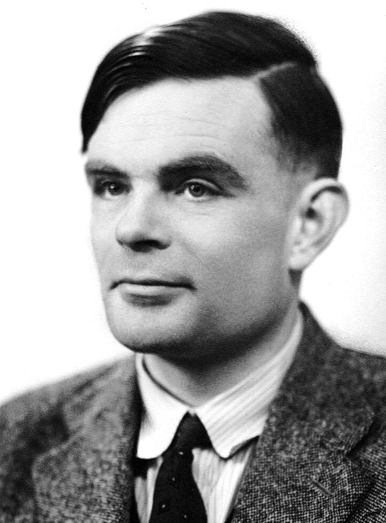
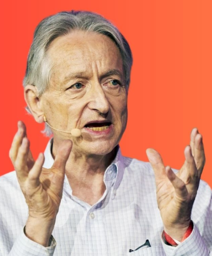

Every major technological shift begins with a revolutionary idea.
These individuals are responsible for laying the theoretical, philosophical, and mathematical
foundations of the AI we use today.

Alan Turing
Alan Turing (1912 — 1954)
Often called "The Father of Theoretical Computer Science". His 1950 paper,
"Computing Machinery and Intelligence", introduced the question, “Can machines think?”
and proposed the "Turing Test" as a benchmark for measuring machine intelligence.
His work on the Turing Machine is the conceptual basis for all modern computers.
John McCarthy
John McCarthy (1927 — 2011)
The "Father of Artificial Intelligence". He is credited with coining the term “Artificial Intelligence” in 1956 for the Dartmouth Workshop. He also developed the programming language **LISP**, which became the standard language for AI research for decades, and pioneered the concept of time-sharing.

Geoffrey Hinton
Geoffrey Hinton (1947 — Present)
Known as the "Godfather of Deep Learning." His fundamental work on the "backpropagation algorithm" in the 1980s and subsequent research on neural networks made the modern deep learning revolution possible. His contributions enabled machines to perform complex tasks like image recognition and language modeling effectively.
LeCun & Bengio
Yann LeCun & Yoshua Bengio
Alongside Hinton, LeCun (known for Convolutional Neural Networks, **CNNs**) and Bengio (known for advancements in language modeling) are considered the key architects of modern neural networks. Their research has propelled AI into the commercial world, enabling breakthroughs in computer vision and natural language processing.